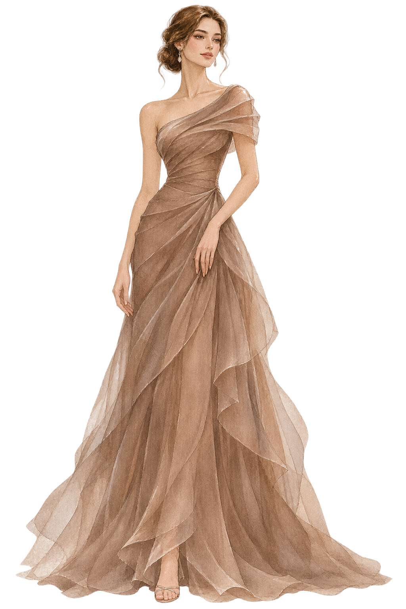
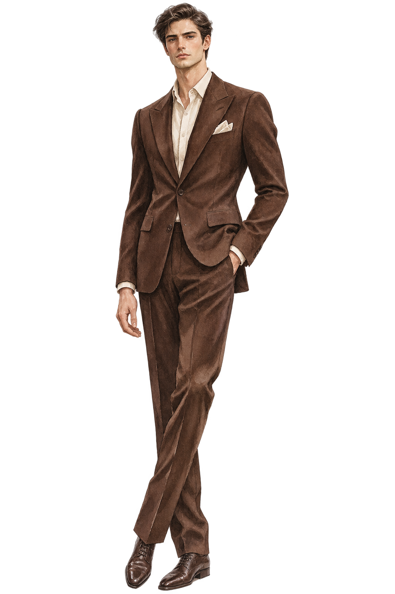

Original artwork · proof of concept
Fashion Illustration Specimens
Two isolated style studies for owner approval before any replacement of the current Attire Guide artwork.


Small-size check
Each figure at 112px wide, near the existing desktop lineup size.